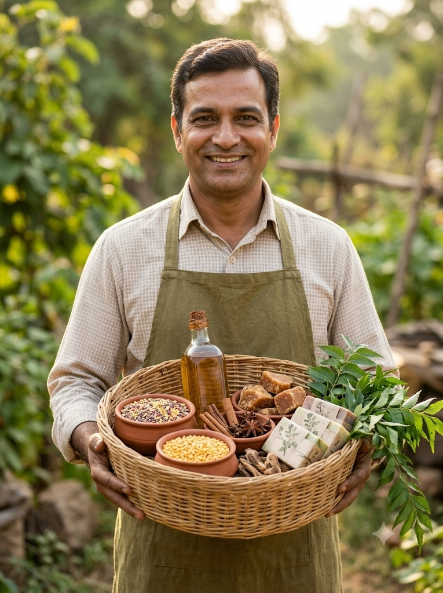

STONE-GROUND TRADITION
Ancient Tamil Grains,
Stone-Ground Fresh
From heirloom Karuppu Kavuni and bamboo rice to wholesome millet sevai—pure nourishment for every meal.
Procuring directly from accredited family farmers committed to pure chemical-free agriculture.
Naturally sun-cured, traditionally processed, and brought straight to our Anna Nagar shelves.
Personalized guidance on traditional ingredients, recipes, and honest seasonal food insights.
Safe payment options, transparent pricing, and prompt delivery across Chennai neighborhoods.
Purchasing directly from select family farmers who practice ethical, regenerative agriculture because they believe in it and so do we. We consciously avoid commercial wholesale channels to keep every grain, cold-pressed oil, and herbal blend completely authentic.
GoOrganic Anna Nagar is dedicated to preserving indigenous native seed varieties, traditional stone-ground milling, and building an honest bridge between conscious farmers and health-conscious families across Chennai.
OUR STORE AT A GLANCE
From conscious farmer networks directly to your Chennai kitchen table.
FROM OUR JOURNAL
Explore traditional Tamil kitchen crafts, authentic recipes, and thoughtful harvest stories from GoOrganic.
"The cold-pressed sesame oil and native heirloom rice from GoOrganic have truly elevated our daily cooking. Sourcing genuine, chemical-free farm staples in Chennai used to be a challenge, but their quality and prompt doorstep delivery are unparalleled."

"As a chef focusing on traditional Tamil Nadu cuisine, finding unadulterated palm jaggery, stone-ground flours, and organic spices is everything. GoOrganic's authentic sourcing standards and pure natural aroma speak directly for themselves."

"Switching our family kitchen to GoOrganic's organic pulses and traditional cold-pressed groundnut oil has brought back the pure, forgotten flavors of our childhood. You can genuinely feel the freshness and care in every harvest."


A FEW ANSWERS
A few things you may want to know before your first visit.
We are at No. GA/580, School Road, Anna Nagar West Extension, opposite SBOA School, Chennai – 600101.
Our collections include whole grains, sweeteners, spices and masala, skincare, seeds, salt, refreshments, pulses, pottery, papads, palm products, organic soaps and oils.
We focus on products grown and processed through traditional methods and work to carefully choose farmers using environment-friendly practices. Product-specific sourcing details can be confirmed with our store team.
Yes. Browse the store, add products to your cart and proceed to checkout. Delivery and payment integrations can be enabled as the store setup is completed.
We are open daily from 9:30 AM to 9:00 PM.
THE GOORGANIC PANTRY
Everyday essentials, thoughtfully brought together. Access exclusive member prices, product details and cart.
A MORE NATURAL WAY TO SHOP
Thoughtful choices. Traditional roots. A little more nature in every day.
ANNA NAGAR · CHENNAIWELCOME TO OUR COMMUNITY
Sign in to continue your journey with GoOrganic.
By continuing, you agree to our terms and privacy policy.
ALMOST AT YOUR DOOR
ORDER CREATED
Your demo order has been created. Payment and delivery are currently in test mode.
Porter integration placeholder. Your delivery partner, tracking link and live status will appear here once the API is connected.
AWAITING DELIVERY ASSIGNMENT